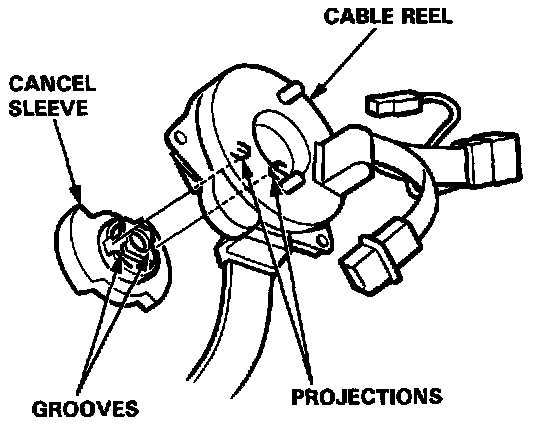
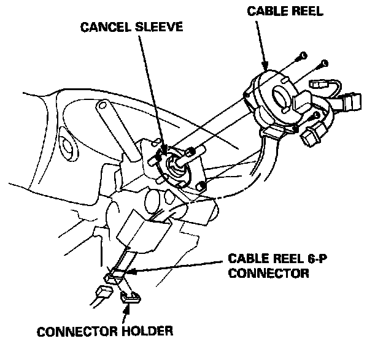
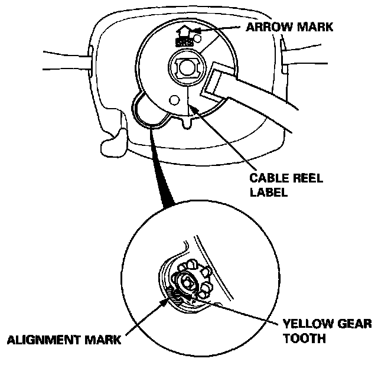
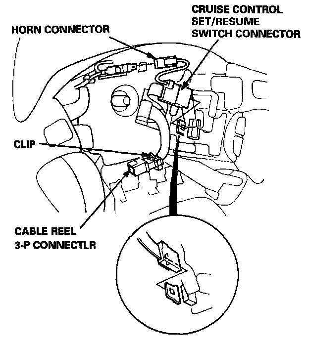
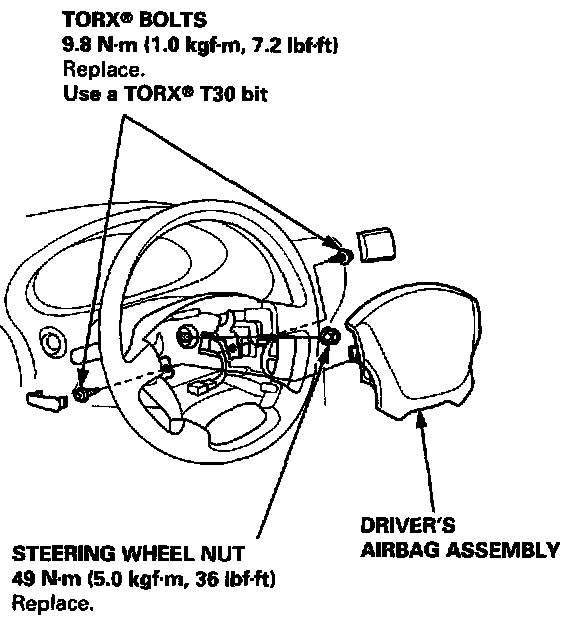
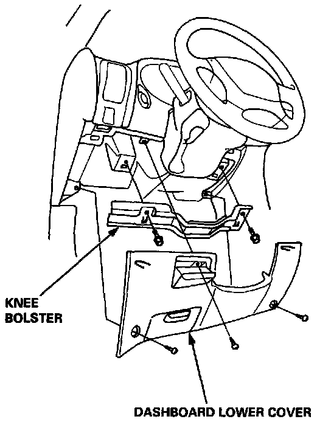
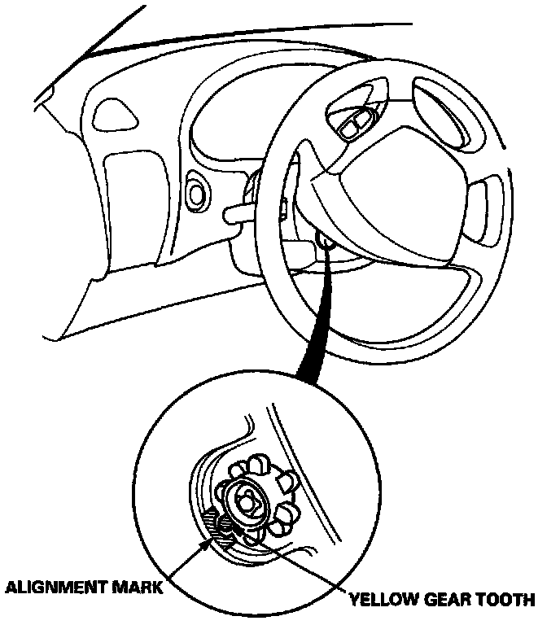

Clockspring Assembly / Spiral Cable: Service and Repair
CABLE REEL REPLACEMENTWARNING: STORE A REMOVED AIRBAG ASSEMBLY WITH THE PAD SURFACE UP. IF THE AIRBAG IS IMPROPERLY STORED FACE DOWN, ACCIDENTAL DEPLOYMENT COULD PROPEL THE UNIT WITH ENOUGH FORCE TO CAUSE SERIOUS INJURY.
CAUTION:
- Carefully inspect the airbag assembly before installing it. Do not install an airbag assembly that shows signs of being dropped or improperly handled, such as dents, cracks or deformation.
- Always keep the short connector(s) on the airbag(s) connector when the harness is disconnected.
- Do not disassemble or tamper with the airbag assembly.
NOTE: The original radio has a coded theft protection circuit. Be sure to get the customer's code number before disconnecting the battery cables.
CAUTION:
- Before installing the steering wheel, the front wheels should be aligned straight ahead.
- Be sure to install the harness wires so that they are not pinched or interfering with other car parts.
- After reassembly, confirm that the wheels are still turned straight ahead and that the steering wheel spoke angle is correct (road test). If minor spoke angle adjustment is necessary, do so only by adjustment of the tie-rods, not by removing and repositioning the steering wheel.

1. Align the cancel sleeve grooves with the cable reel projections.

2. Carefully install the cable reel on the steering column shaft. Then attach the connector holder to the steering column.
3. Install the steering column upper and lower covers.

4.Center the cable reel, Do this by first rotating the cable reel clockwise until it stops. Then rotate it counterclockwise (approximately two turns) until:
- The yellow gear tooth lines up with the alignment mark on the cover.
- The arrow mark on the cable reel label points straight up.
5. Install the steering wheel and attach the cable reel 3-P connector to the clip.

6. Connect the horn connector and cruise control set/resume switch connector.
7. Install the steering wheel nut.

8. Install the driver's airbag assembly.

9. Connect the cable reel 6-P connector to the SRS main harness, then install the knee bolster and dashboard lower cover.
10. Remove and properly store the short connector(s)(RED), then reconnect the airbag connector(s) (and reinstall the glove box).
11. Reconnect the battery positive cable, then the negative cable.
12. After installing the cable reel, confirm proper system operation:
- Turn the ignition ON (II); the instrument panel SRS indicator light should go on for about six seconds and then go off.
- Make sure both horn buttons work.
- Make sure the headlight and wiper switches work.
- Go for a test drive and make sure the cruise control switches work.

- Rotate the steering wheel counterclockwise to make sure the yellow gear tooth lines up with the slot on the cover.
13. Enter the code number to restore radio operation.